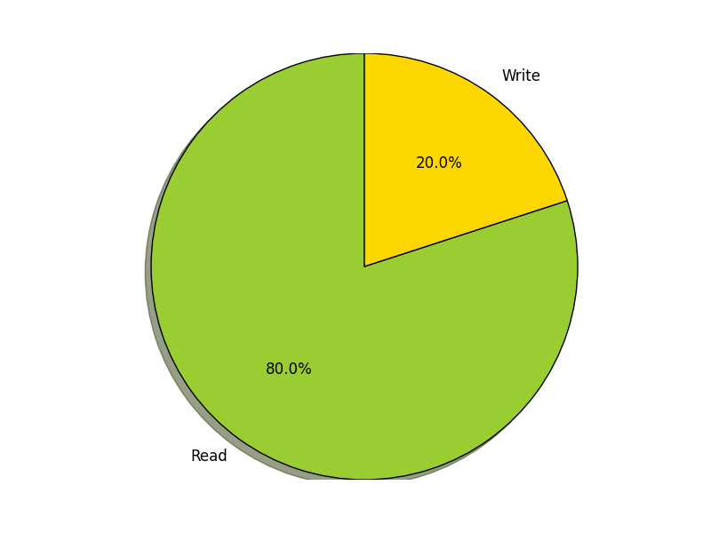
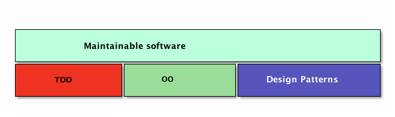
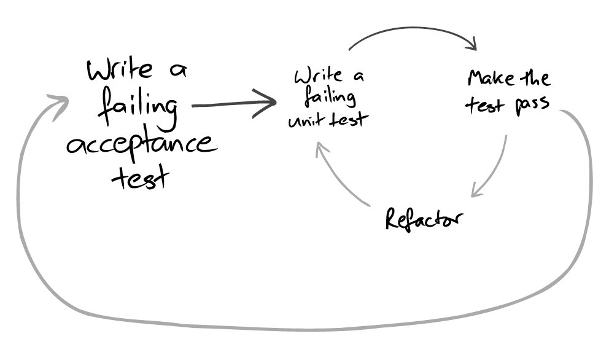
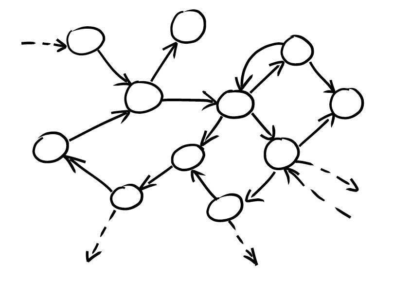
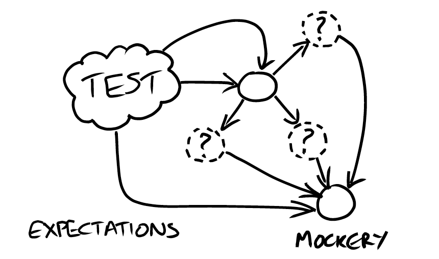
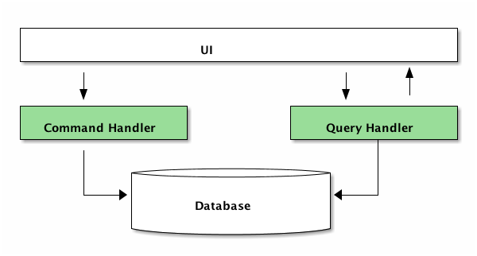
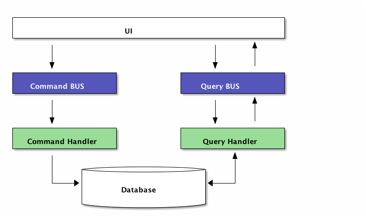
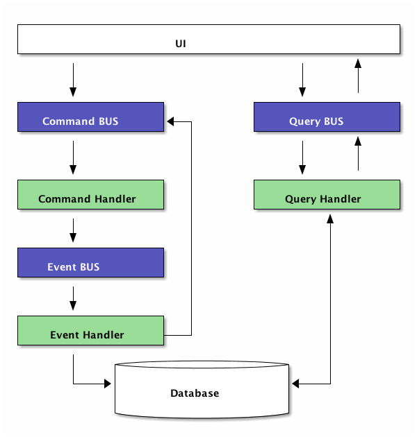

1 Preface
1.1 What kinds of problem have you met during software development?
- Code is not easy to read and understand
Bad System Metaphor
Sometime, we don't have the good System Metaphor, in other words, we don't understand the domain well
Code is not just for you
We always collabrate together, but we are different. So it may cause misundertanding, make things more complicated.
Code smell
Some are caused by ourselves, some are caused by others. But we need clean code.
- Bug is not easy to fix
- data preparation is not easy
- highly coupling
- overuse DI(Dependency Injection)
- debuging, debuging, debuging…
- Code is brittle, bugs create bugs
- regression issues
- Code is not easy to test
1.2 Ideal software
According to lifecycle of software development:
- Understand the requirement well and build good domain model
- Good software design
- Code is easy to write, read and understand
- Good quality
- Easy to deply and maintain
1.3 Why we want software maintainable?
- Sometimes, we need to fix bugs
- Sometimes, we need to extend it
Easy to Read( Understand ) VS Easy to Write
It costs us much more time to read than to write code, in the lifecycle. According to 80/20 rule:

Figure 1: Read Vs Wright
2 What's maintainable software?
My understanding:
- EASY to understand
- EASY to change
Features of mainainalbe software:
- System has all the features required.
- System has good System Metaphor.
- System has good design.
- Few bugs
- Bugs are easy to get and fix
- System is easy to understand and change
But we human being has limitations:
- Human being are not good at dealing with complicated things, but software are always complicated.
- Gap bewteen team members.
So we need Continious Improvement:
- Incremental development
- Feedbacks
- Positive feedback
- Negetive feedback
All in all, what we need are:
- System has all the features required(Requirement)
- Good design
- Testable
- Incremental development
- Feedbacks
3 How do we write maintainable software?
3.1 Cornerstones to write maintainable software
Three cornerstones of maintainable software:

Figure 2: Cornerstones of maintainable software
3.1.1 TDD

Figure 3: Inner and outer feedback loops in TDD
3.1.2 OO

Figure 4: A web of objects

Figure 5: Testing an object with mock objects
3.1.3 Design Patterns
In software engineering, a software design pattern is a general reusable solution to a commonly occurring problem within a given context in software design.
3.2 Benefit of TDD, OO and Design Patterns
| Method | Benefit |
|---|---|
| TDD/ATDD | Requirement |
| Incremental Development | |
| Feedbacks | |
| OOA/OOD/OOP | Good design |
| Testable | |
| Desgin Pattern | Good design |
| Testable |
3.3 Put them together
- Use TDD(core of agile practice) to find the issues
- Use OOP to dignose the issues
- Use Design Patterns to solve the issues
4 Example
- Simple CQRS

Figure 6: Sinple CQRS
- CQRS with BUS

Figure 7: CQRS with BUS
- CQRS with BUS and Event Source

Figure 8: CQRS with BUS and Event Source